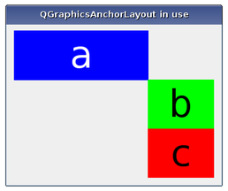

| Home · All Classes · Modules · QSS HELP · QSS 案例 · VER007 HOME |
该QGraphicsAnchorLayout类提供了一个布局，其中一个可以停泊的部件一起在图形视图。More...
该QGraphicsAnchorLayout类提供了一个布局，其中一个可以停泊的部件一起在图形视图。
锚布局允许开发人员指定的部件应如何放置彼此相对，并且布局本身。本说明书是由通过添加锚的布局通过调用addAnchor（ ）addAnchors（）或addCornerAnchors（ ） 。
在布局中现有的锚可以与被访问anchor（）函数。被锚定项目自动添加到布局，如果项目被移除，所有的锚将被自动删除。

锚总是成立的项目，其中的“中心”也被认为是边缘的边缘之间。请看下面的例子：
layout->addAnchor(b, Qt.AnchorLeft, a, Qt.AnchorRight); layout->addAnchor(b, Qt.AnchorTop, a, Qt.AnchorBottom);
这里，项目的右边缘a被锚定到项目的左边缘b和产品的底部边缘a被锚定到产品的上边缘b，其结果是产品b将对角线放置在右边和下边项目b。
该addCornerAnchors（）函数提供固定的两个小部件的边角比两个单独的调用的一个简单的方法addAnchor（ ）显示在上面的代码中。在这里，我们看到了一个小工具，可以锚定到封闭布局的左上角：
layout->addCornerAnchors(a, Qt.TopLeftCorner, layout, Qt.TopLeftCorner);
在锚定器被用来匹配部件的宽度或高度的情况下，可以很方便地使用addAnchors（）函数。与其它功能用于指定锚，它也可以用于固定一个部件的布局。
QGraphicsAnchorLayout尊重每个项目的大小提示和大小政策。请注意，有一些特性QSizePolicy是not respected。
布局可以分发的项目之间的一些空间。如果间距没有被明确指定，空间的实际金额通常是0 。
然而，如果在第一边缘是opposite第二边缘（例如，第一部件的右边缘被固定到第二部件的左边缘）的，锚的尺寸将会从样式通过查询一个像素度量：PM_LayoutHorizontalSpacing水平和锚PM_LayoutVerticalSpacing垂直锚。
如果该间距为负，则物品将重叠到某种程度。
有迹象表明， QGraphicsAnchorLayout目前不支持某些功能。这可能会改变未来，因此要避免使用这些功能，如果你想避免任何行为将来回归：
该parent的说法，如果不是没有，原因self通过Qt的，而不是PyQt的拥有。
构造一个QGraphicsAnchorLayout实例。parent被传递给QGraphicsLayout的构造。
该firstItem说法有它的所有权转移给Qt的。
该secondItem说法有它的所有权转移给Qt的。
创建边缘之间的锚定firstEdge项目firstItem和边缘secondEdge项目secondItem。锚的间距是从式拾取。布局边缘和产品边缘之间的锚将具有为0的大小。如果已经有边缘之间的锚，在新的锚定将取代旧的。
firstItem和secondItem会自动添加到布局，如果他们不是布局的一部分。这意味着count（ ）可以通过最多2增加。
间隔的锚定会得到依赖于锚定的类型。例如，锚从一个项目的右边缘到另一个（或反之亦然）的左边缘将使用默认的水平间距。同样的行为适用于从下到上的锚， （但他们会使用默认的垂直间距） 。对于所有其它的组合锚，间距为0。所有的锚定功能将遵循这个规则。
的间隔也可以通过使用手动设置QGraphicsAnchor.setSpacing（）方法。
调用此函数，其中firstItem or secondItem正在布局的祖先未定义的行为。
See also addAnchors（）和addCornerAnchors（ ） 。
该firstItem说法有它的所有权转移给Qt的。
该secondItem说法有它的所有权转移给Qt的。
锚定件的两个或四个边firstItem同的对应边缘secondItem，使firstItem具有相同的尺寸secondItem在所指定的尺寸orientations。
例如，下面的例子锚的两个项目的左，右边缘，以配合它们的宽度：
layout->addAnchor(b, Qt.AnchorLeft, c, Qt.AnchorLeft); layout->addAnchor(b, Qt.AnchorRight, c, Qt.AnchorRight);
这也可以使用下面的代码行来实现：
layout->addAnchors(b, c, Qt.Horizontal);
See also addAnchor（）和addCornerAnchors（ ） 。
该firstItem说法有它的所有权转移给Qt的。
该secondItem说法有它的所有权转移给Qt的。
建立在两个锚firstItem和secondItem由指定的边角，firstCorner和secondCorner其中之一是对水平方向的边缘，另一个为垂直方向的边缘。
这是一个方便的功能，由于锚定角可以表示为锚定两条边。例如：
layout->addAnchor(a, Qt.AnchorTop, layout, Qt.AnchorTop); layout->addAnchor(a, Qt.AnchorLeft, layout, Qt.AnchorLeft);
这也可以达到与下面一行代码：
layout->addCornerAnchors(a, Qt.TopLeftCorner, layout, Qt.TopLeftCorner);
如果已经有一个边缘对之间的锚定，它将由锚被替换，该函数指定。
firstItem和secondItem会自动添加到布局，如果他们不是布局的一部分。这意味着count（ ）可以通过最多2增加。
See also addAnchor（）和addAnchors（ ） 。
返回由所定义的锚点之间的锚firstItem和firstEdge和secondItem和secondEdge。如果不存在这样的锚，该函数将返回0。
从重新实现QGraphicsLayout.count（ ） 。
返回默认的水平间距为锚的布局。
See also verticalSpacing（）和setHorizontalSpacing（ ） 。
从重新实现QGraphicsLayout.invalidate（ ） 。
从重新实现QGraphicsLayout.itemAt（ ） 。
从重新实现QGraphicsLayout.removeAt（ ） 。
删除的项目布局index不破坏它。该项目的所有权转移给调用者。
删除一个项目也将删除与此日志关联的锚。
从重新实现QGraphicsLayoutItem.setGeometry（ ） 。
设置默认的水平间距为锚布局spacing。
See also horizontalSpacing（ ）setVerticalSpacing（）和setSpacing（ ） 。
设置默认的水平和用于锚定布局的默认垂直间距spacing。
如果一个项目是挂靠，没有与相关的锚间距，它会使用默认的间距。
QGraphicsAnchorLayout不支持负的间距。设置一个负值将取消设置之前的间距，使布局使用由当前控件的样式所提供的空间。
See also setHorizontalSpacing（）和setVerticalSpacing（ ） 。
设置为锚布局为默认的垂直间距spacing。
See also verticalSpacing（ ）setHorizontalSpacing（）和setSpacing（ ） 。
从重新实现QGraphicsLayoutItem.sizeHint（ ） 。
返回锚布局默认的垂直间距。
See also horizontalSpacing（）和setVerticalSpacing（ ） 。
| PyQt 4.10.3 for X11 | Copyright © Riverbank Computing Ltd and Nokia 2012 | Qt 4.8.5 |